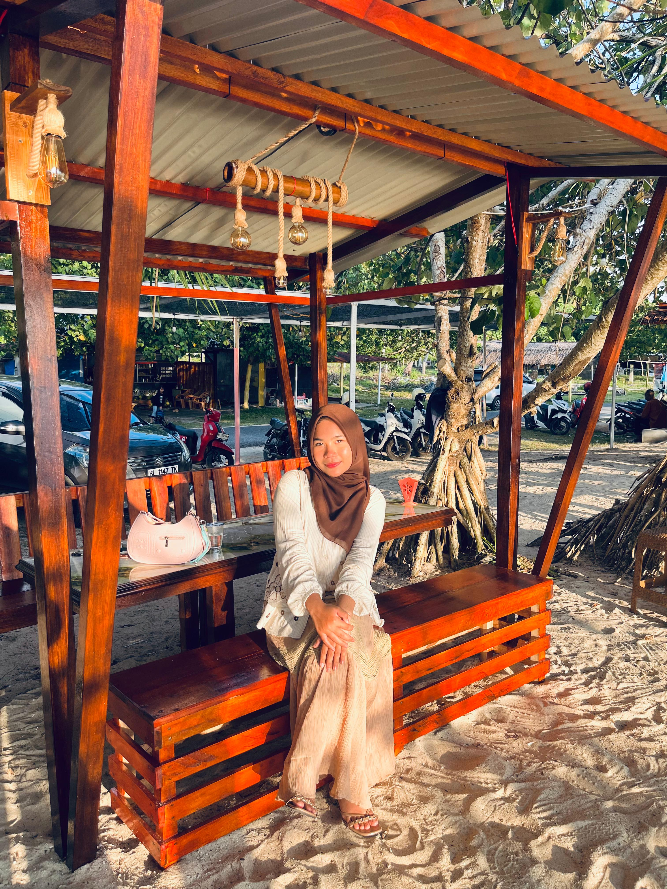
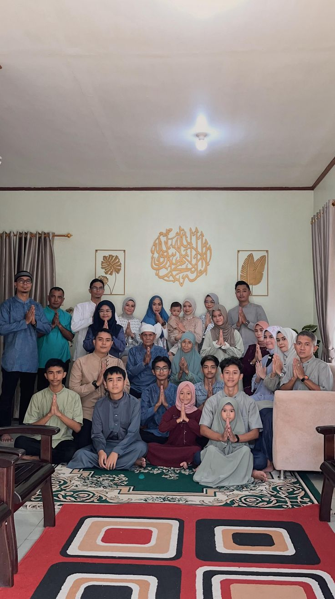
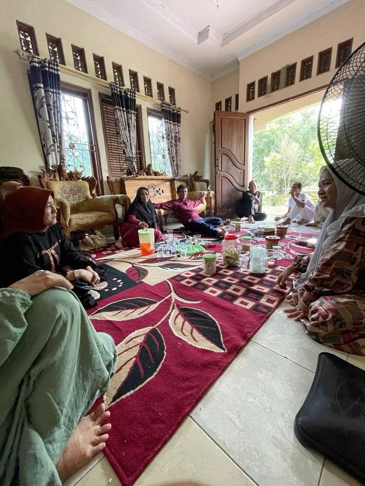
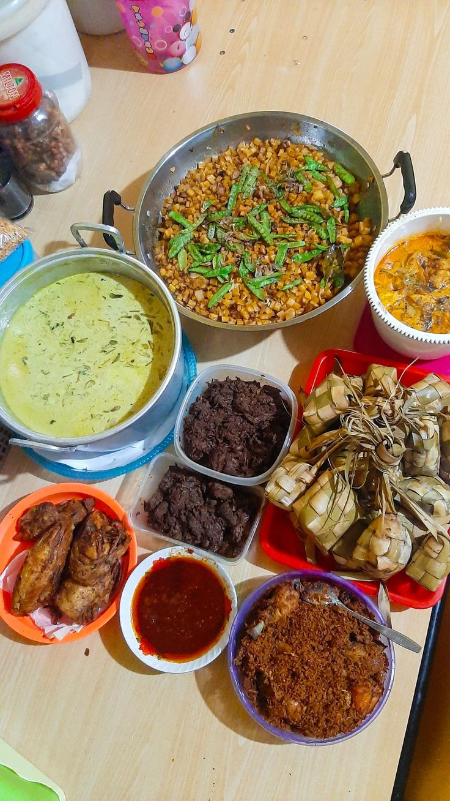

Momen Bersama Keluarga
Berkumpul bersama keluarga adalah momen yang sangat menyenangkan dimana semua keluarga d berkumpul di rumah nenek untuk untuk saling bersilaturahmi.

Silaturahmi
Kami sekeluarga berkunjung kerumah sanak saudara baik itu yang dekat maupun yang jauh untuk mempererat silaturahmi.

Hidangan Lebaran
Hidangan saat lebaran adalah hal yang penting, seluruh keluarga makan bersama menyantap hidangan yang disediakan di rumah nenek.
👤 Nama: Rani Anjela
🎂 TTL: Aceh, 11 Januari 2004
📍 Alamat: Aceh Selatan
📸 IG: @rani_anjla
📱 WA: 082321633294